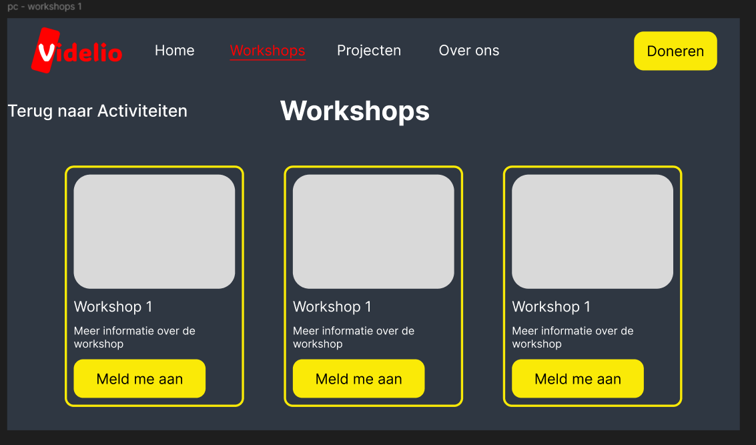

Meesterproef
Tijdens de meesterproef ben ik samen met Eva, Thomas & Ocean een website gaan ontwikkelen voor Videlio. Videlio is een stichting die zich inzet voor de onafhankelijkheid van blinden en slechtzienden. Videlio wilt een website die zowel fijn is voor zienden als slechtzienden of blinden. De website die wij hebben gemaakt kun je hier vinden. Je kunt hem ook live bekijken via deze link. Op deze pagina zal ik mijn proces documenteren met als einde een reflectie over dit project.
Klik hier om een jumpa te maken naar mijn reflectie.
Week 1
Maandag
Vandaag heb ik de opdracht doorgelezen op brightspace en met mijn groepje besproken welke dingen hierbij belangrijk zijn. Verder hebben we een vragenlijst voorbereid voorafgaand van de briefing. Ook heb ik contact gelegd met Peter, waarna wij het telefoonnummer van Roger kregen. Hierdoor konden wij een afspraak maken voor de briefing.
Ook heb ik samen met mijn groepje met Sanne, onze coach, gesproken over de opdracht. Hier hebben wij ook afspraken gemaakt over de wekelijkse coaching die gaat plaatsvinden.
Dinsdag
Vandaag ben ik naar restaurant Louie Louie gegaan om Roger te ontmoeten en over de opdracht te praten. Tijdens het gesprek hebben we afspraken gemaakt over de wekelijkse meetings, maar ook over de website die wij gaan leveren. We hebben prioriteiten gesteld en afspraken gemaakt over onze oplevering.
Na het gesprek ben ik met mijn team richting school gegaan en hebben ik de probleemdefinitie geschreven en Thomas geholpen met de debriefing. Verder heb ik met mijn team een takenverdeling gemaakt.
Woensdag
Vandaag ben ik begonnen aan de workshop pagina, ik heb nagedacht over de werking hier van. Ik heb een klein design gemaakt in Figma hiervoor.

Mijn doel is om initieel zo min mogelijk content te laten zien, zodat mensen met een visuele beperking gelijk oog hebben naar het belangrijkste van de pagina. Ik wil dit met pop overs gaan doen. Deze zijn erg toegankelijk en het is een web API die ik kan gaan gebruiken.
Donderdag
Vandaag heb ik verder gewerkt aan de workshop pagina. Hier heb ik ook een contactformulier aan toegevoegd voor mensen die iets bij willen dragen aan de workshops. Achteraf hebben we besloten dat ik het formulier beter weg kan halen en in plaats daar van een mail link kon toevoegen. Omdat we dit ook op andere plekken gebruiken van de pagina.
Vrijdag
Vanochtend heb ik ons eerste concept werkend gemaakt. Hiervoor heb ik een aparte branch gemaakt en ervoor gezorgd dat alle pagina’s gelinkt zijn aan de navigatie.
Vrijdag ben ik rond een uur of 11 vertrokken richting Utrecht. We kwamen samen om kwart voor 2 aan bij Roger. Peter was hier ook aanwezig hier hebben we ons concept gepresenteerd. We kwamen met het idee om in plaats van 2 versies van de website te hebben, om gewoon 1 versie te hebben die je kunt uitbreiden. Dit vonden Roger en Peter een goed idee als dit ook zou werken. Daarom willen we het uitwerken in de volgende iteratie. Ook hebben we een beter idee van wat de opdrachtgevers graag willen.
Reflectie week 1
Woensdag wilde ik graag popovers gaan gebruiken, maar nadat ik dit ging proberen merkte ik dat dit niet werkte zoals ik had gedacht. Dit kwam omdat zij over de pagina heen worden opengeklapt. Andere elementen op de pagina maken geen ruimte vrij voor de popover, waardoor de popover op de voorgrond komt en andere elementen verbergt.
Tijdens het gesprek met Roger en Peter merkte ik dat zij niet veel technische kennis hebben wat betreft web ontwikkeling. Dit wist ik natuurlijk van te voren al, maar dat gaat wel lastig worden tijdens het koppelen van het CMS met onze website. Omdat zij zelf ook niet precies weten hoe hun website host dingen toevoegt aan de website is het lastig om te peilen of het mogelijk is om dit te doen.
Voor de volgende iteratie wil ik dan ook meer onderzoek doen naar hoe zo’n koppeling werkt en wat ik daarbij nodig heb vanuit hun website host. Zodat zij de vragen direct door kunnen sturen. Als dat lukt kan de integratie van onze website soepel verlopen.
Week 2
Dinsdag
Vandaag heb ik met Sanne gesproken over onze voortgang en mijn leerdoelen. Ik heb besproken hoe ik mijn leerdoelen wil behalen. Omdat ik meer wil leren designen ben ik begonnen met het opnieuw ontwerpen van een logo voor Videlio.
Woensdag
Vandaag heb ik twee workshops gevolgd: GSAP workshop, dit was echt super interessant. Dit wil ik ook gaan gebruiken in mijn blog. Ook heb ik een JavaScript workshop gevolgd van Jad. Dit was ook fijn om even mijn JavaScript weer op te krikken. Verder ben ik doorgegaan met het designen van het logo.
Donderdag
Vandaag ben ik begonnen aan het toevoegen van een footer die responsive is. Ik heb hem gedesigned en daarna geïmplementeerd op de pagina. Ook ben ik begonnen aan het migraten van ons project naar Astro.
Vrijdag
Vandaag ben ik verder gegaan met de migration naar Astro en deze afgemaakt. Ook heb ik nog wat versies van het logo uitgeprobeerd. Maar daar kwam ik helaas niet uit. Daarna zijn wij gaan afspreken met Roger en Peter van Videlio om de voortgang te bespreken. Hieruit is gekomen dat wij het CMS willen gaan implementeren. Hiervoor moeten wij Daan, de persoon die hun oude website regelt, een paar vragen stellen.
Reflectie week 2
Achteraf vind ik het jammer dat ik veel tijd heb gestoken in het herontwerp van een logo. Ik denk dat ik mijzelf een beetje liet sidetracken om aan mijn leerdoel te werken. Daarom heb ik niet veel kunnen doen aan de voortgang van het project naast het migreren naar Astro.
Ik ben wel blij dat ik die migration heb gedaan, omdat het anders moeilijk zou zijn om de website schaalbaar en bruikbaar te maken voor Videlio.
Week 3
Maandag
Vandaag ben ik vooral bezig geweest met het toevoegen van documentatie aan de wiki. Ik vind het een goed idee om alle gesprekken die wij hebben met onze coach en opdrachtgever samen te vatten en te documenteren. Hierdoor is het proces duidelijk en kun je het altijd gemakkelijk teruglezen.
Ook hadden wij een gesprek met Sanne, waarin hij ons adviseerde om even terug te gaan en te kijken naar onze content architectuur. Dit hebben we direct daarna gedaan. Nu hebben we weer een idee van wat er allemaal op de website hoort en wat niet.
Dinsdag
Ik ben vandaag begonnen met het maken van Agenda en AgendaItem componenten. Ook heb ik een lijst met vragen gemaild naar Roger die hij door kan geven aan hun host. Verder heb ik met mijn groep nog verder gekeken naar de architectuur van de content. Hier hebben we nog een aantal aanpassingen gemaakt.
Woensdag
Vandaag heb ik 2 workshops gevolgd, een met Leonie over testen en communicatie met opdrachtgever. Hierna heb ik contactgegevens van Ihab gevraagd aan Leonie, waarna ik hem een mail heb kunnen sturen om te vragen of hij ons testpersoon wil zijn. Ook heb ik een Javascript workshop van Jad gevolgd. Dit vond ik echt super interessant. Het ging over Classes en een klein stukje Promises. Volgende week verwacht hij meer in te gaan op Promises. Ook heb ik een Button component en een ButtonLink component toegevoegd aan het project.
Donderdag
Vandaag ben ik bezig geweest met het toevoegen van agenda items met astro, zodra we een CMS hebben kunnen we dit gelijk koppelen. In de middag zijn we naar de voorhoede op bezoek geweest.
Vrijdag
Vandaag ben ik naar Utrecht gegaan bij Videlio om te bespreken wat we deze week hebben toegevoegd aan de website. We hebben van Peter een wordpress omgeving gekregen waarop wij het CMS kunnen gaan maken. Dit is super fijn, want nu kunnen we ook gaan nadenken over de gehele overdracht.
Reflectie week 3
Ik vond het jammer dat we nogsteeds niet helemaal eens zijn over de structuur van de website. Daarom moeten we veel dingen nu nog veranderen terwijl we eigenlijk over moeten gaan naar afronding van de opdracht.
Verder vind ik wel dat de website al steeds meer afkomt. Het is fijn om te zien dat er voortgang wordt gemaakt.
Week 4
Maandag
Vandaag ben ik begonnen met het opzetten van het CMS. Ik heb activiteit objecten gemaakt en deze in wordpress gezet. Hierna heb ik een koppeling gemaakt van het CMS naar de agenda item objecten.
Dinsdag
Vandaag ben ik verder gegaan met het uitbreiden van de agenda item objecten. In de middag heb ik een extra Javascript workshop gevolgd van Jad.
Woensdag
Ik heb de laatste puntjes op de i gezet van de agenda objecten en heb ze responsive gemaakt. Vanaf 13:00 was the web you want, daar ben ik heen gegaan.
Donderdag
Vandaag was ik de hele dag bij CSS day.
Vrijdag
Vandaag ben ik naar CSS day gegaan. In de middag ben ik terug naar school gekomen om me voor te bereiden op de een na laatste meeting met Videlio. Ik heb nog een paar laatste dingen gemerged en ervoor gezorgd dat de main branch klopt. Hierna ben ik weer teruggegaan naar CSS day.
Reflectie week 4
Ik vond deze week echt fijn werken, ik kon lekker verder werken aan het CMS en het is fijn om te zien hoe blij videlio was met de toepassing van het CMS, ookal is het nog niet op iedere pagina. Het is jammer dat ik 2,5 dag niet heb kunnen werken aan de opdracht. Maar CSS day was wel een super vet evenement en ik had het echt niet willen missen!
Laatste loodjes
Maandag & dinsdag
Op maandag en dinsdag heb ik ervoor gezorgd dat de podcasts en de radio uitzendingen ook via het CMS geïmplementeerd kunnen worden. Verder heb ik de pagina’s responsive gemaakt en de styling een beetje getweakt.
Woensdag
Vandaag ben ik naar Utrecht gegaan om met Videlio te praten over het uiteindelijke product. Ze waren over het algemeen erg blij met wat we hebben opgeleverd. Toch vond ik het frustrerend dat er steeds nieuwe dingen bij kwamen die volgens hen anders moesten. Al helemaal omdat het vrijdag leek alsof alles goed ging.
Donderdag
Vanochtend heb ik met mijn team gebeld en hebben wij samen een lijstje gemaakt met dingen die nog allemaal af moesten voor de expo. Ik heb de taak op mij genomen om het design rationale af te maken en nog een paar dingen op de home pagina aan te passen. In de avond heb ik alles gemerged naar main en de opdracht ingeleverd.
Reflectie op de meesterproef
Ik vond de samenwerking met mijn teamgenoten erg fijn, we waren vaak allemaal op dezelfde golflengte. Toch vond ik het begin van het project erg rommelig, hierdoor hebben we ook minder tijd gekregen om goed gebruik te maken van Astro componenten. Ook werden hierdoor sommige problemen op verschillende plekken anders opgelost.
Ik vond het contact met de opdrachtgever over het algemeen fijn. Toch merkte ik dat ik de laatste paar meetings mij steeds meer begon te irriteren. Ik denk dat ik kwam doordat ik wist dat het project geen goede basis had, maar de opdrachtgevers steeds nieuwe dingen van ons vroegen.
De volgende keer als ik met een opdrachtgever werk wil ik er daarom voor zorgen dat de structuur van het project goed is voordat we verder gaan. Je kunt niet bouwen op een wankelende basis. Ik denk dat ik hierdoor ook zelfverzekerder in mijn schoenen sta.
Ik vond de meesterproef ontzettend leerzaam. Vanaf het begin werden we eigenlijk al losgelaten; we moesten zelf contact opzoeken met de opdrachtgever en ook zelf testpersonen regelen. Natuurlijk als je vragen had kon je altijd bij een docent terecht, of je kon aansluiten bij de workshops die gegeven werden. Maar over het algemeen werd je heel erg losgelaten. Dat vond ik wel fijn, omdat ik daar het meeste van heb geleerd denk ik.